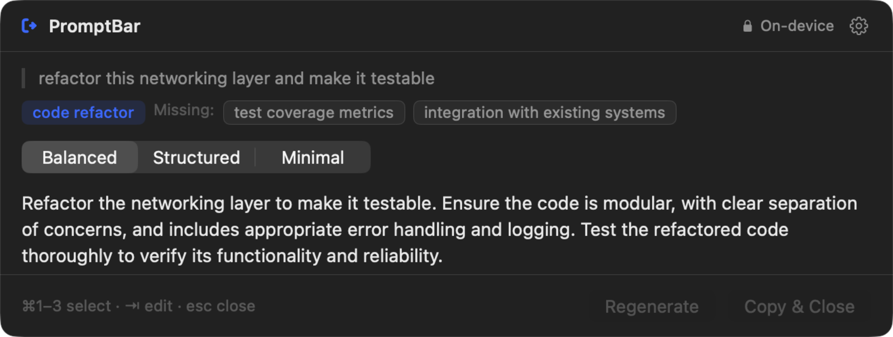
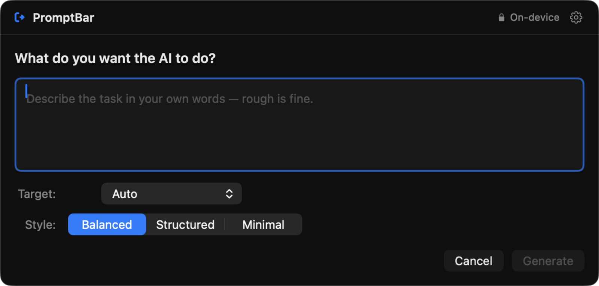
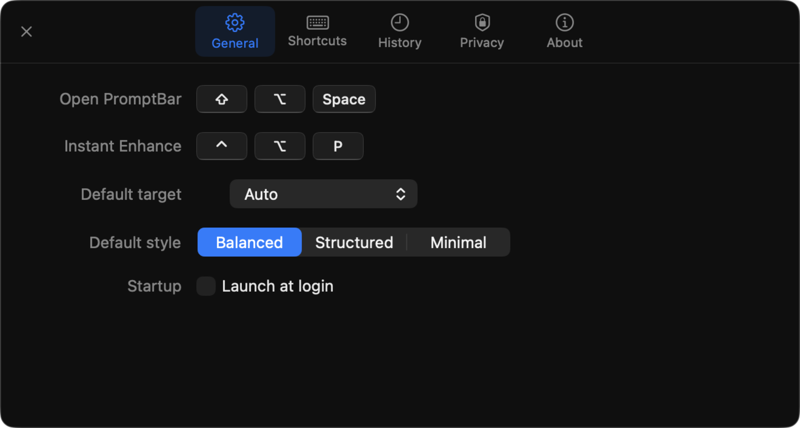
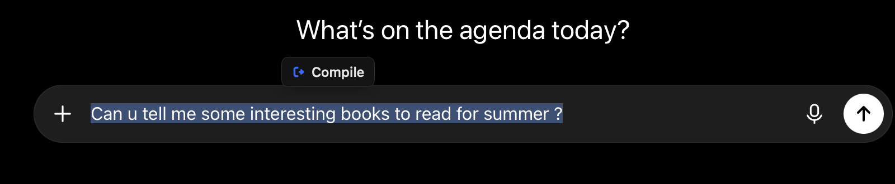

Turn rough thoughts
into prompts that work
PromptBar is a prompt compiler for macOS. Copy a half-formed instruction, press a shortcut, and get three prompts an AI can actually execute — then one keystroke puts it on your clipboard.

PromptBar reads01 what you roughly wrote, rewrites02 it three different ways, and hands back03 the one you pick — without inventing a thing.
Write it badly. That's the point.
Paste a rough note or type one sentence. PromptBar checks it locally before the model runs, telling you what the instruction is still missing — the output format, the constraints, the success criteria.
- Clipboard or typed input
- Deterministic prompt check
- Target profiles
- Balanced / Structured / Minimal

Three prompts that genuinely differ
Not three paraphrases. Minimal keeps your wording. Balanced adds context as prose. Structured emits real sections — Objective, Context, Requirements, Constraints, Expected output. Each is generated against its own contract, so they differ by construction.
- Invent requirements
- Pick a tone or word count
- Add role-play preambles
- Reinterpret your wording
Copy it and get on with your work
The whole loop is a shortcut, an arrow key and Return. There is a second shortcut that skips the window entirely and rewrites your clipboard in place, keeping a restore point.
- No Dock icon
- Optional local history
- Per-app exclusions
- Launch at login

Or compile straight from your selection
A prompt usually starts as words you already typed somewhere else. Select them in any app and a Compile chip appears beside the text — click it and the panel opens on that selection, with no copying first.
It is off until you switch it on, and it is the only part of PromptBar that asks for a permission. The chip never takes focus, so your selection is still there when the panel opens.
- Off by default
- Never takes focus
- Skips password fields
- Honours excluded apps

Nothing to send.
Nothing to trust.
It runs on your Mac
Enhancement uses Apple's on-device Foundation Models. There is no server, so there is no request to inspect.
No account, ever
Nothing to sign into and no key to paste. Install it and press the shortcut.
Your clipboard is not watched
PromptBar reads the pasteboard only in the moment you invoke it — never in the background.
The selection chip is opt-in
It is the one feature that needs Accessibility access, and it stays off until you ask for it. Password fields and excluded apps are never read, and nothing is stored or sent.
History is off by default
If you turn it on it stays in the app container, with retention limits and apps you can exclude outright.
The short answers.
Does it need Apple Intelligence turned on?
Yes. Enhancement runs on Apple's on-device Foundation Models, which macOS only exposes once Apple Intelligence is enabled. If it is off, PromptBar tells you and offers to open the right Settings pane rather than failing quietly.
Does anything leave my Mac?
No. There is no server to send anything to and no account to hold it. The model runs locally, so PromptBar keeps working with the network off.
How long can the input be?
Around 4,000 characters. The on-device session shares one 4,096-token window between the instructions, the schema, your input and all three outputs. PromptBar warns as you approach the ceiling and refuses rather than silently truncating your text.
How are the three variants actually different?
Each is generated as its own field against its own structural contract, not paraphrased from a shared draft. Minimal keeps your wording, Balanced adds context as prose, and Structured emits labelled sections. They differ by construction.
What permissions does it ask for?
One, and only if you opt in. The Compile chip needs Accessibility access to read the selected text, and it stays off until you switch it on. The ⇧⌥Space shortcut needs no permission at all.
Why does no chip appear in some apps?
Because they expose no Accessibility text — many Electron apps do not. PromptBar will not press ⌘C on your behalf to work around it, so those apps simply get no chip instead of a clipboard surprise.
What does it cost?
Nothing. It is free and MIT licensed, and the model it uses is already on your Mac. There is no paid tier and no usage metering.
Which Macs can run it?
Apple silicon Macs on macOS 26 or later. The on-device model requires Apple silicon, so Intel Macs are not supported.
One command.
Signed with a Developer ID and notarized by Apple, so it opens without a Gatekeeper prompt.
# add the tap once brew tap tornikegomareli/tap # install brew install --cask promptbar
Requires macOS 26 on Apple silicon, with Apple Intelligence enabled.